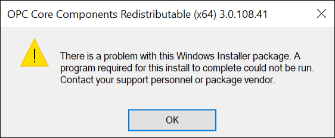
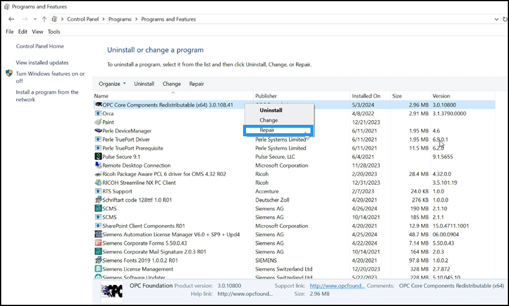
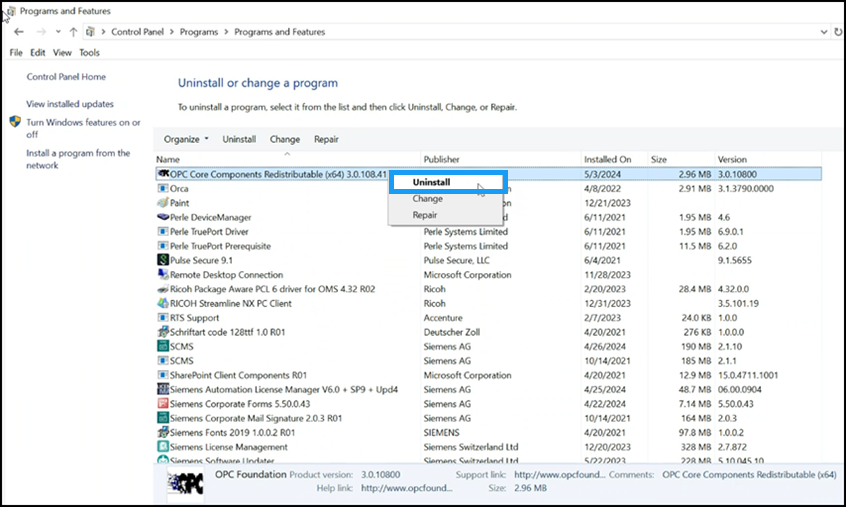

Cannot Uninstall OPC Core Component V3.0.10800 Prerequisite
Problem: Uninstallation of the OPC Core Component V3.0.10800 prerequisite fails with the following error message:

Resolution: Perform the following steps:
- Reboot the machine.
- Navigate to Control Panel > Programs > Programs and Features.
- Repair the OPC Core Components Redistributable (x64) 3.0.108.41 prerequisite. Select the prerequisite from the list of installed programs, right-click, and select Repair.

- The repair activity occurs in the background.
- After the prerequisite is repaired, reboot the machine a second time.
- Navigate back to Programs and Features and select the OPC Core Components Redistributable (x64) 3.0.108.41 prerequisite. Right-click and select Uninstall.
